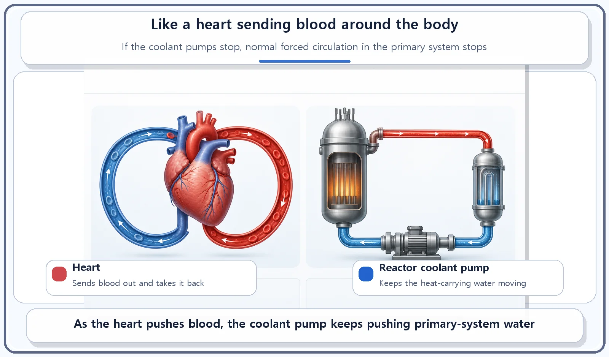
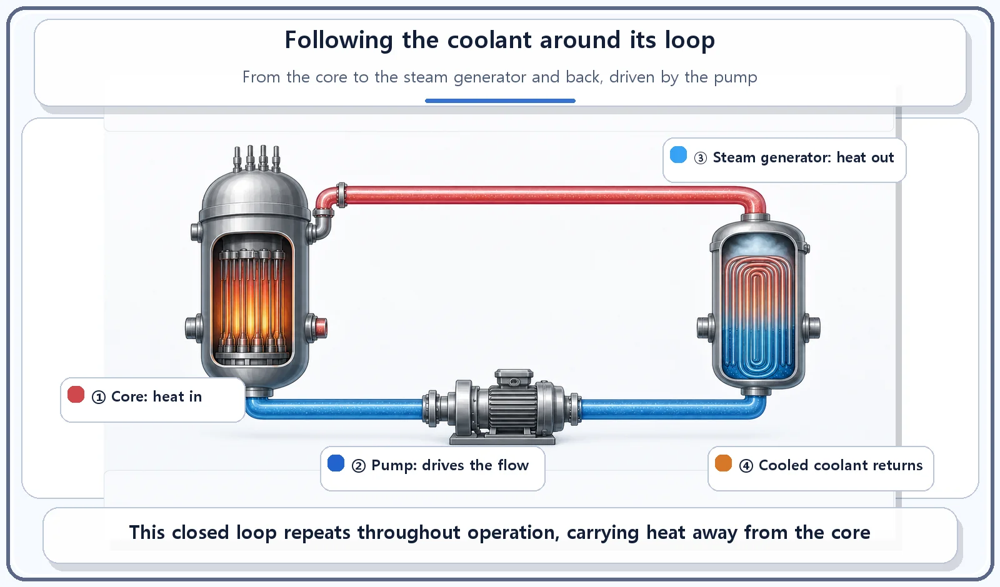

Reactor Components · 063
The Heartbeat of a Reactor — What the Reactor Coolant Pump Does
Coolant can only carry heat if something keeps it moving. In a pressurized water reactor, that job belongs to the coolant pumps.
Coolant can only carry heat away from a reactor core if something keeps it moving. Reactor coolant pumps in the primary-system piping provide that push, driving the water from the core to the steam generator and back again, nonstop, the way a heart keeps blood circulating.
No heartbeat, no circulation
Your heart beats without a break, sending blood to every corner of your body. Blood has to travel, carrying oxygen and nutrients, for your cells to do their jobs. But that circulation doesn't happen on its own. The blood moves only because a pump called the heart keeps pushing it.
We often say that the coolant carries heat away from a reactor's core, but that statement leaves something out. For the coolant to actually move, the system needs a separate "heart" to create the circulation. That component is the reactor coolant pump.
The coolant pump: the force behind the flow
Coolant heated in the reactor core (the primary-system water) has to travel to the steam generator to hand over its heat, and once it has cooled, it has to come back to the core. That circulation does not happen by itself. Reactor coolant pumps installed in the primary-system piping supply the driving force that keeps the coolant circulating, nonstop, from the core to the steam generator and back to the core.
A pressurized water reactor is usually designed with several reactor coolant pumps in its primary system, so that there is enough coolant flow to carry away the heat the core produces. Just as the heart circulates blood throughout the body to deliver oxygen and nutrients, the coolant pumps circulate coolant through the whole primary system to carry heat away from the core.

Following the loop
Here is the coolant's route, step by step. First, as it passes through the core, the coolant absorbs heat and gets hot. Next, driven by the coolant pump, it travels to the steam generator, where it hands its heat to the secondary system and cools down. The cooled coolant then passes through the coolant pump again on its way back to the core, and this loop repeats the whole time the reactor is running.

Easy mix-ups
The coolant pump and the steam generator have different jobs. The steam generator is a heat exchanger that passes heat to the secondary system. The coolant pump is the machine that keeps the heat-carrying water moving. The two work hand in hand.
The coolant pump and the pressurizer handle different physical quantities. The pressurizer controls the pressure of the primary system. The coolant pump creates the flow rate, that is, how vigorously the water moves. Pressure and flow are different things.
| Component | What it does | Quantity it handles |
|---|---|---|
| Steam generator | Passes heat to the secondary system | Heat |
| Pressurizer | Holds primary-system pressure steady | Pressure |
| Reactor coolant pump | Keeps the coolant circulating | Flow |
The heart analogy covers only the core function. If the heart stops, blood circulation stops completely. A reactor, however, is designed so that even if the coolant pumps stop, some circulation still happens naturally, driven by temperature differences (called natural circulation). How the plant handles cooling in such an emergency is a safety topic for another day; here we focus on the core function: the pump is the force that creates forced circulation during normal operation.
The short version
The reactor coolant pump keeps primary-system coolant circulating, nonstop, between the core and the steam generator, and pressurized water reactors usually use several of them to make sure enough heat is removed. If the steam generator is the device that transfers the heat, the coolant pump is the force that moves the water carrying it.
Next comes the large structure that encloses all of these components as the final barrier: the containment building.